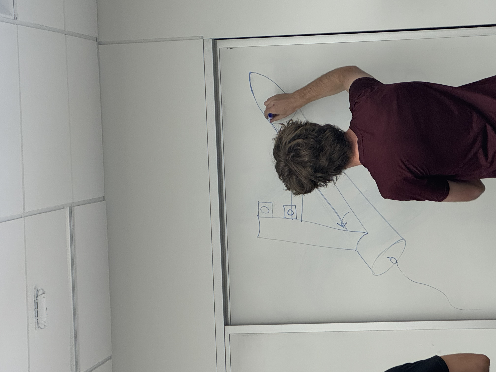
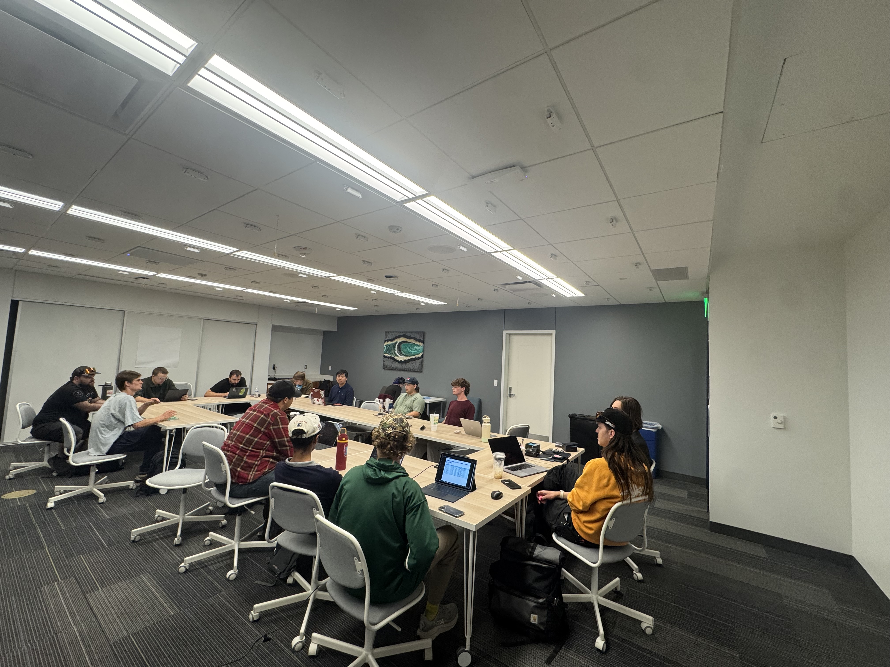
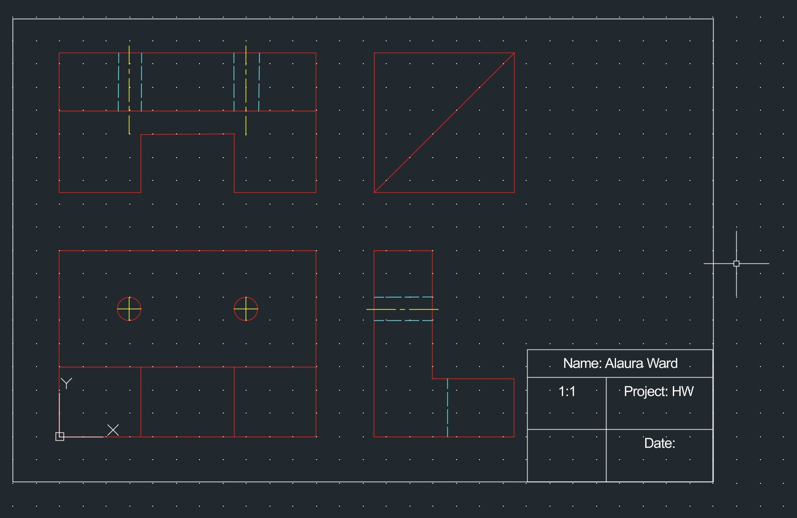
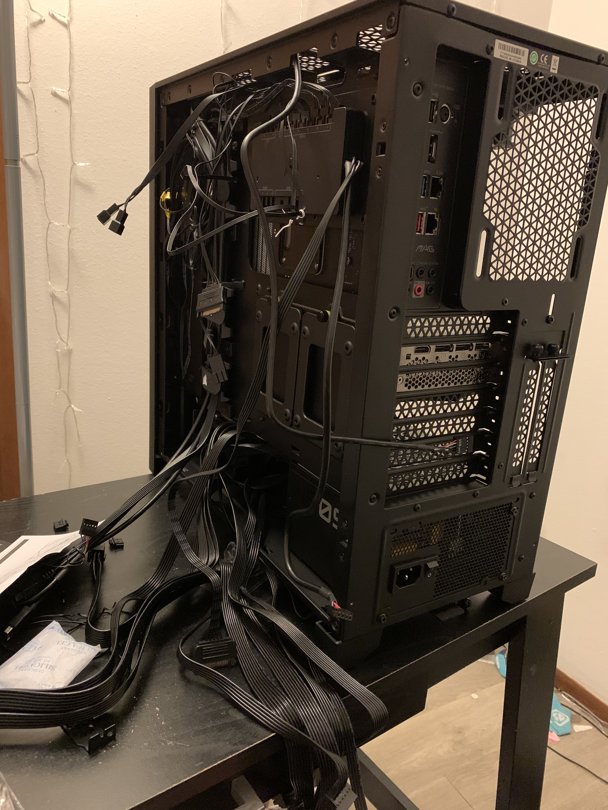
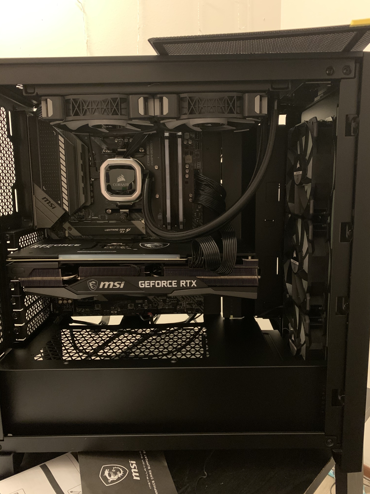
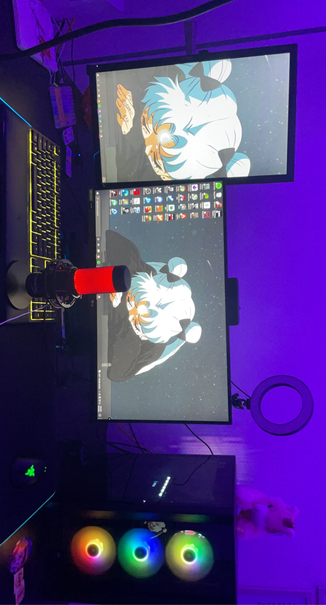
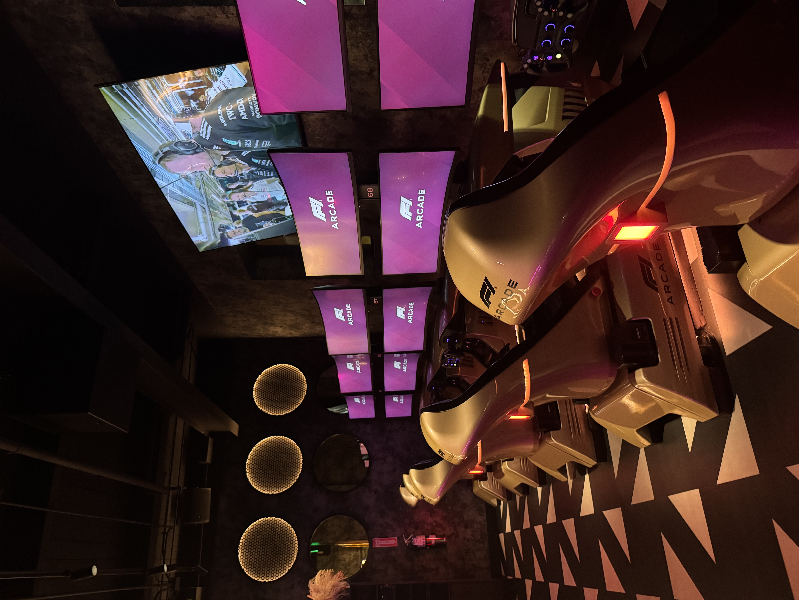

Projects by Alaura Ward
Things I've built, things I'm building, and things I'm still figuring out.


I'm working as the STEM outreach and community engagement lead with MSU Denver's NASA Student Launch team on a multidisciplinary rocketry project that brings together design, manufacturing, electronics, testing, safety, and industry collaboration, and community outreach. I'm especially interested in the hardware and software side of the project, like sensors, cameras, circuits,and using code to help a system recognize or sort what it detects. By the end of the project in April I hope to have obtained my level 1 rocketry certification
Skills: Aerospace | Engineering Design | Electronics | Coding | Collaboration

I'm learning how to take a 3D part and turn it into an accurate 2D engineering drawing using AutoCAD. I've worked with orthographic views, projection lines, the miter line method, hidden lines, centerlines, dimensions, and other drafting tools. I actually really enjoy CAD because it feels like solving a visual puzzle while also figuring out how a part would actually be built or manufactured.I plan on continuing to develop my skills in technical drawing and AutoCAD to obtain my SolidWorks certification by December 2026.
Skills: AutoCAD | Technical Drawing | CAD | Orthographic Projection
I built this website using HTML, CSS, Bootstrap, Git, and GitHub as a place to document what I'm learning and the projects I'm working on. I wanted it to feel like me instead of just being a basic school portfolio, so I've been working on making it responsive, and accessible, while still keeping my personality.
Skills: HTML | CSS | Bootstrap | Git | GitHub | Responsive Design



A lot of my first hands-on experience with computers came from building, upgrading, and troubleshooting PCs for myself and my family. I've worked with CPUs, GPUs, RAM, storage, watercooling, power supplies, BIOS settings, drivers, and Windows while trying to figure out why something suddenly decided it didn't want to work. It's honestly one of the things that made me realize I like understanding how hardware and software work together. From purchasing individual components to assembling and troubleshooting the final system, I've gained a comprehensive understanding of how everything fits together.
Skills: PC Hardware | Troubleshooting | Windows | BIOS | Hardware/Software Integration

Working as an F1 Technician gives me hands-on experience troubleshooting technology, maintaining equipment, and solving problems in a fast-paced environment. It also gives me a chance to work with the kind of hardware, systems, and motorsports technology that originally pulled me toward engineering.
Skills: Technical Troubleshooting | Hardware | Customer Support | Motorsports | Problem Solving